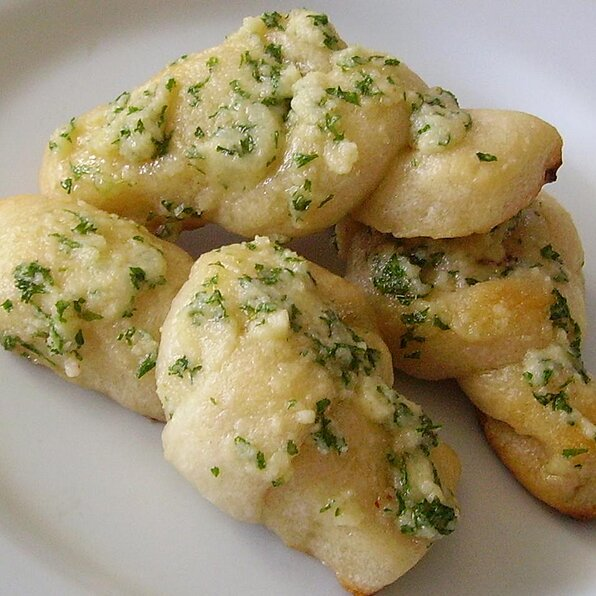

Garlic Knots Recipe

Description
Start off your meal with some garlic knots! A quick appetizer that can be whipped up with a handful of ingredients. Perfect with pizza!
Ingredients
- 1 (10 ounce) can refrigerated pizza crust dough
- 1/3 cup olive oil
- 6 tablespoons finely chopped fresh garlic
- 5 tablespoons grated Parmesan cheese
- 3 tablespoons chopped fresh parsley
- 1 teaspoon crushed red pepper
- 1 teaspoon salt
Instructions
- Preheat oven to 450 degrees F (230 degrees C).
- Roll out pizza dough to form a 10x16 inch sheet of dough. Cut the sheet into 3/4 inch parallel strips. Then cut these strips in half making about 24 pieces. Tie each strip into a knot and place these knotted strips of dough close together in a greased pan.
- Bake in preheated oven until golden brown. Remove the knots from the oven, place them in a big bowl. While the knots are still hot, drizzle them with olive oil. Sprinkle with garlic, cheese, parsley, red pepper and salt. Toss well and serve.